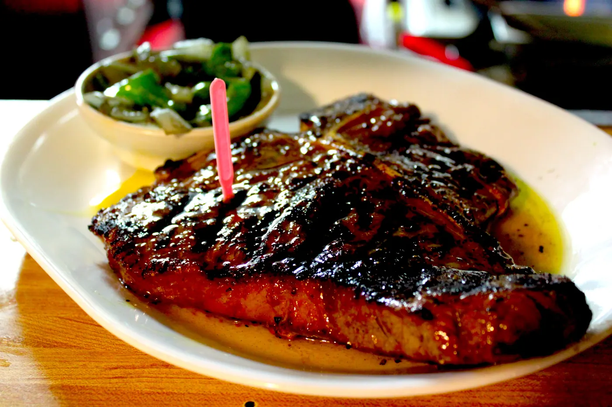
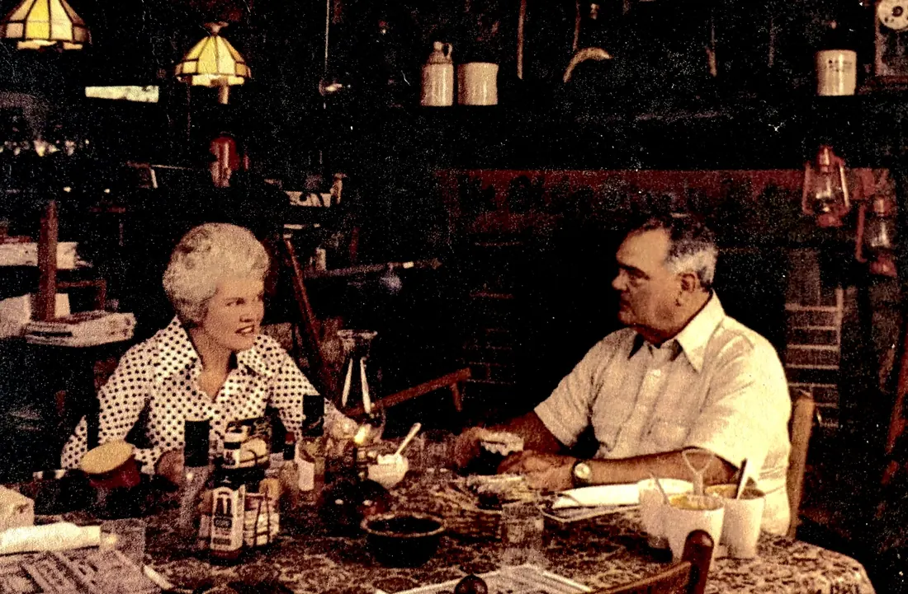
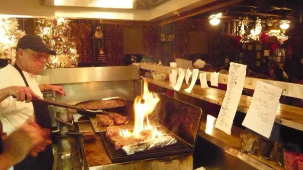
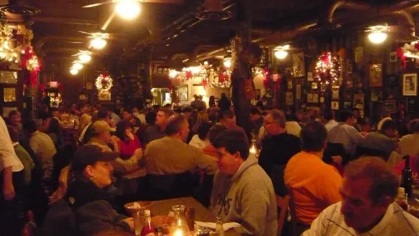

Food Fit For A King
Flame-grilled steaks on Chapman Highway since 1968.
Every entree comes with a house salad, your choice of side and hot homemade bread. The desserts are made in-house. No liquor license, so bring your own bottle.
Monday to Saturday, 4 to 9. Closed Sunday. Reservations for parties of 5 or more; smaller parties are seated first come, first served.
Daily Specials
Monday
Burger Night!
- King Steakburger & 1 side, $10
- Add cheese, $1.50
Tuesday
Early Bird, 4 to 6
- King Steakburger & 1 side, $10
- Chicken sandwich & 1 side, $10
Wednesday
Chicken Night!
- Charbroiled chicken dinner with 2 sides, $14
- Chicken sandwich & 1 side, $10
Thursday
Early Bird, 4 to 6
- King Steakburger & 1 side, $10
- Chicken sandwich & 1 side, $10
Burgers come plain or all the way with lettuce, tomato, pickle & onion. No additional discounts on daily specials; split-plate charge applies. From the house menu. Call (865) 577-9328 to confirm this week’s specials.

In 1968, Bunt King lost his mind.
He came home one evening and announced to his wife, Helen, that the old antique-shop alongside Chapman Highway would make a great spot for a steak house. In typical Helen fashion, she nodded and smiled, thought of a few choice words, chose not to say them, and then went about making it happen.
… No frills. Nothing fancy. Just good food cooked-up and served to good people.
No liquor license. Bring the bottle.
Because of limited space and storage, the family has chosen not to sell wine and liquor. You are welcome to bring your own for a small setup charge. Beer is on the menu: domestic, premium and imports.
What Folks Say
“We had the best meal, service and steak we’ve had in years tonight at Ye Ole Steakhouse it’s a true definition of it ain’t broke don’t fix it!”
P. Scarbrough · Google review, a month ago
“Ye Olde Steak House is a landmark restaurant in Knoxville serving some of the best steaks and side dishes I ever eaten. The Woodshed Potatoes are just fried potatoes with onions but they are so good and their broccoli casserole is delicious.”
Rhonda Whaley · Google review, 9 months ago
“The prime rib was phenomenal, tender and full of flavor, clearly made from a high-quality, hand-cut piece of meat. … The cozy, rustic atmosphere inside the beautiful log-style building made the whole experience even better.”
Moein Rajaei · Google review, 11 months ago
“Best steak in East TN!! Our steaks were seasoned just right and cooked perfectly. The woodshed potatoes are a must, absolutely delicious!”
Tanya Hodgins · Google review, 7 months ago
“Outstanding! Had read about this hidden gem somewhere within the past year. Now, the daughter lives just a few miles down the road. Guess where we’ll be every time I visit.”
Brad Lentz · Google review, 8 months ago
“This place has been on my bucket list for years and finally got to visit this past weekend. … I had the ribeye with home cut fries was perfectly cooked and very tasty.”
Micheal H · Google review, a year ago
If these walls could talk, they’d probably say:
Inside the log building


A Few Kind Words From Others
- 2025Cityview Magazine Best of the Best: Steakhouse
- 2024Cityview Magazine Best of the Best: Steakhouse
- 2023Cityview Magazine Best of the Best: Steakhouse
- 2022Only In Your State: Must-Visit Steakhouse
- 2021Cityview Magazine Best of the Best: Steakhouse
- 2021Knoxville Stars, Best Steakhouse
- 2020Cityview Magazine Best of the Best: Steakhouse
- 2019Best Steaks, Who Rocks In Knox
- TVMan v. Food on the Travel Channel
- TVESPN’s “Taste of the Town” with Todd Blackledge
Come see us
Knoxville, Tennessee 37920
Less than 6 miles from downtown Knoxville.
| Monday | 4 to 9 PM |
|---|---|
| Tuesday | 4 to 9 PM |
| Wednesday | 4 to 9 PM |
| Thursday | 4 to 9 PM |
| Friday | 4 to 9 PM |
| Saturday | 4 to 9 PM |
| Sunday | Closed |
Call ahead for reservations of 5 or more, carry out orders, and whole cakes and pies. No online reservations.